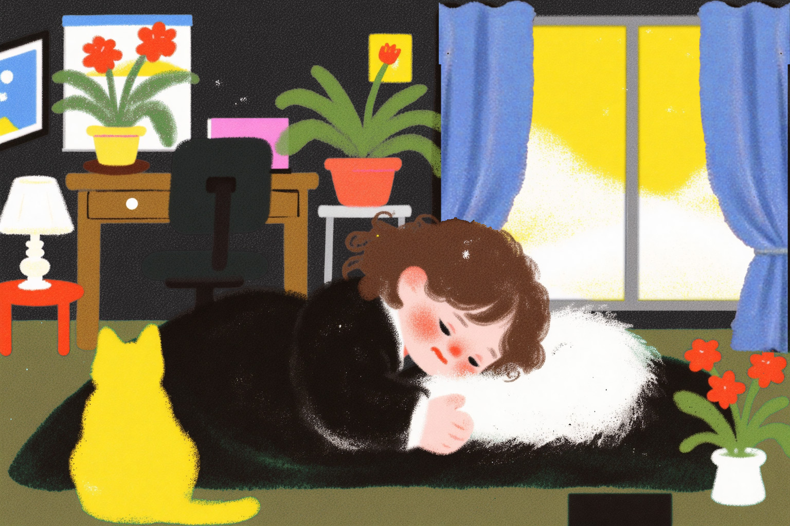
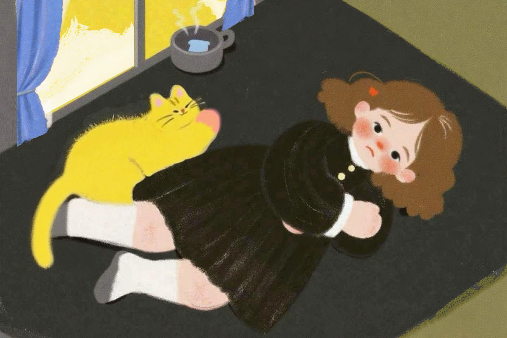
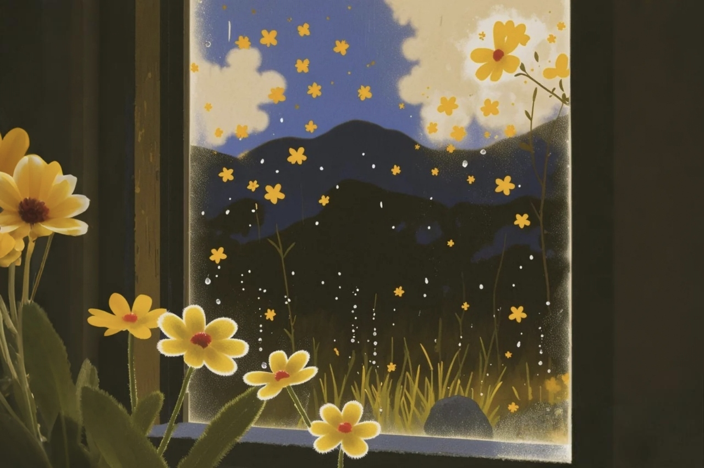
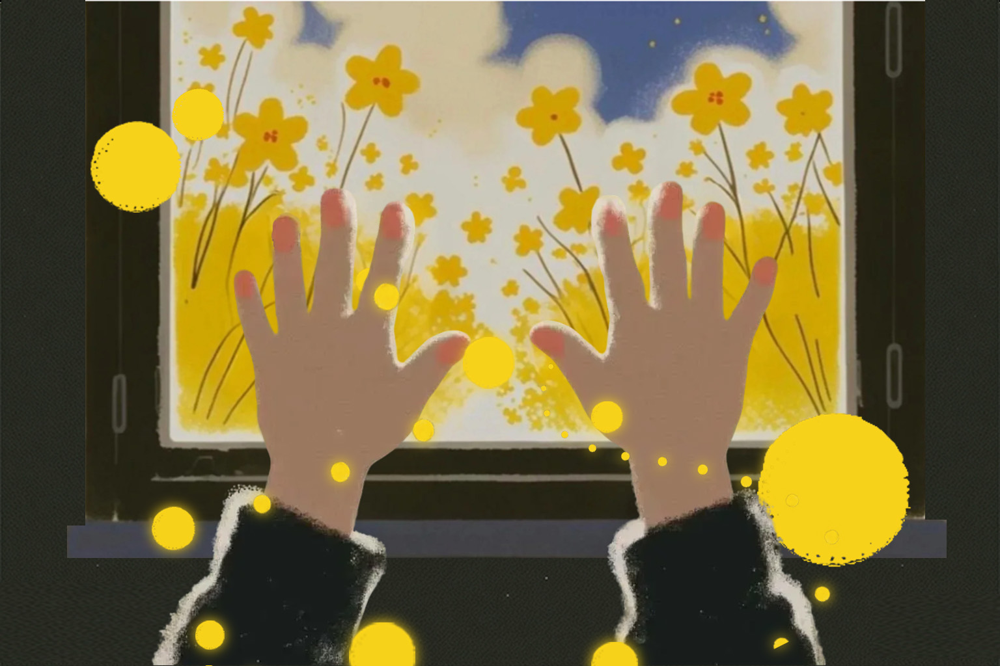
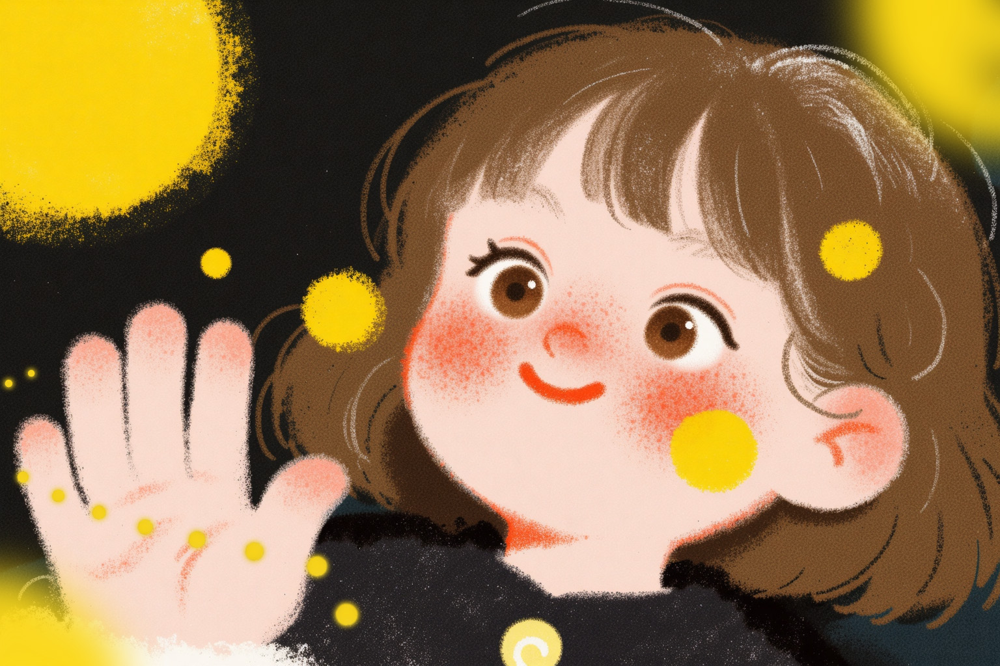
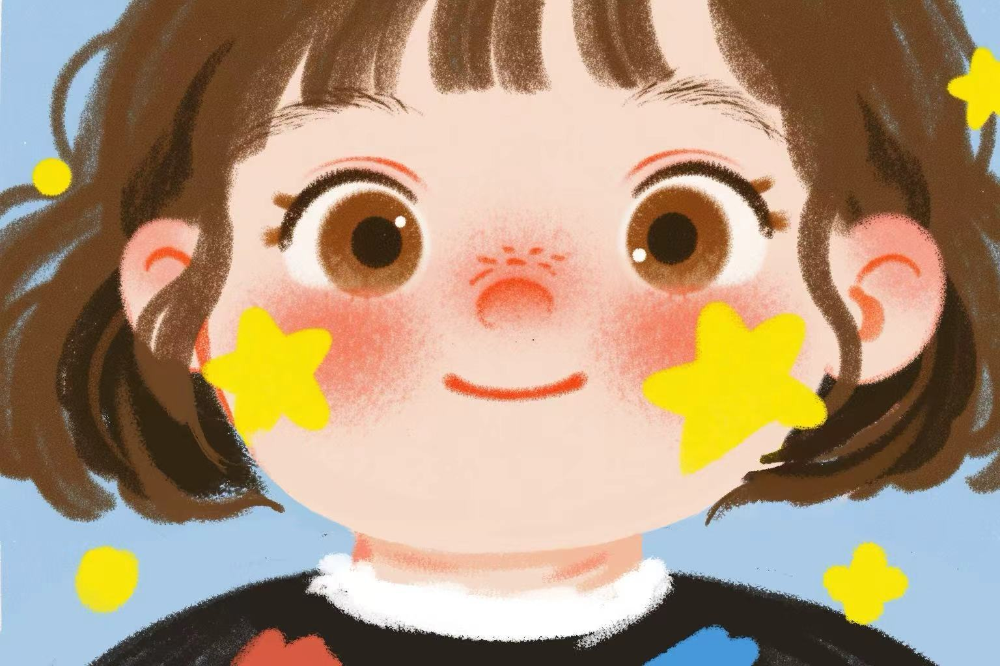

INDEX / 作品目录
01 / 07
海 & 祂 & 花
综合艺术与视觉探索个人作品集。本作品集涵盖了从数字分镜、AI辅助叙事、新媒体交互装置到纯艺与摄影探索的多维实验，探讨人、环境与深层精神意识之间的共生纽带。
# 2026作品集
# 视觉传达
# 跨界数字艺术

综合艺术与视觉探索个人作品集。本作品集涵盖了从数字分镜、AI辅助叙事、新媒体交互装置到纯艺与摄影探索的多维实验，探讨人、环境与深层精神意识之间的共生纽带。
叙事在一片沉闷、压抑的黑色底调中展开。主角在黑暗的温床中苏醒，身边仅有一只亮黄色的猫咪陪伴。窗外是一片夺目而带有神秘感的高饱和金黄色，暗示着某种既渴望又令人驻足的彼岸。

随着视角的拉近与转换，主角陷入了深刻的沉思。高饱和度的金黄色窗光在暗色房间的对比下显得愈发神圣。猫咪不仅是陪伴者，更是引路人，将视线不断锚定在房间与外界的临界点上。

当主角把目光完全投向窗外时，世界开始发生奇妙的形变。那些符号化的花朵仿佛在夜空中流淌，像雨一样落下。黑暗不再是单纯的压抑，而是孕育奇迹的夜空，预示着精神世界的一场洗礼。






利用数字媒介探索图形生成的无限可能性。作品通过算法模拟流体与粒子的碰撞，创造出具有生命张力的无序螺旋结构。打破传统艺术界限，让观众在与画面的交互中，体验数据转化为有机艺术的过程。
回归现实的生命力捕捉。通过微距与高反差摄影，记录日常生活角落中那些不被注意的“生长的痕迹”。材料的肌理、光线的折射，在这里共同交织出一种安静且充满神性的艺术仪式感。